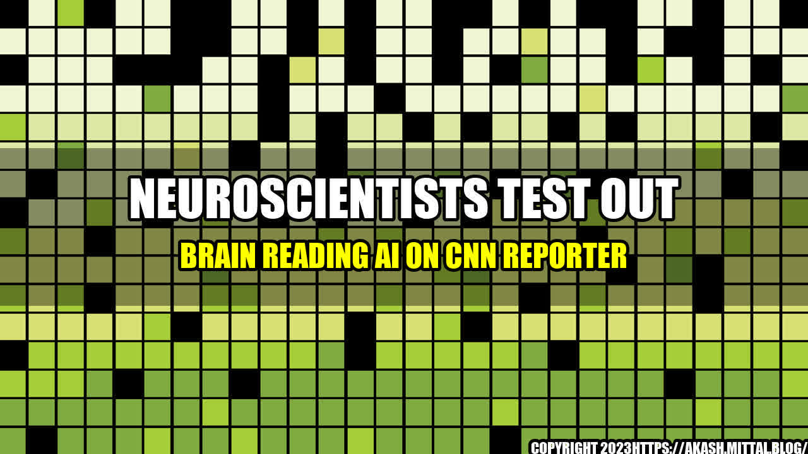

Neuroscientists Test Out Brain Reading AI on CNN Reporter
Neuroscientists from the University of California are experimenting with cutting-edge AI technology that allows them to read the human brain, as reported by CNN Business. The project aims to better understand how the brain processes information and could inform future advances in the field of brain-machine interfaces.

The Process
As part of the testing process, a CNN reporter volunteered to have electrodes attached to her scalp while wearing an electroencephalogram (EEG) cap. The EEG cap reads the brain's electrical signals and sends them to a computer which decodes them into something that can be read by a machine learning algorithm. The algorithm then predicts the mental state of the participant based on the brain signals it receives.
The aim of the study is to train the AI system to recognize the patterns associated with certain cognitive processes, such as attention and emotion. According to CNN Business, the researchers then challenged the CNN reporter to concentrate on a specific image on a computer screen, while their AI system attempted to predict which image she was focusing on. Ultimately, the system was successful in its predictions, suggesting that this technology has the potential to be used in a range of applications, from gaming to medical settings.
The Potential
There are many potential uses for this type of technology, such as helping people with paralysis or brain injuries to communicate more effectively. For example, a person with paralysis or brain damage could use their brain waves to operate a computer or other device, which would enhance their quality of life. Other possible applications range from gaming to health monitoring, such as detecting changes in brain patterns that could indicate a serious medical condition.
According to CNN Business, the University of California researchers have also used this technology to distinguish between different visual stimuli. By observing the brain waves of participants while they were watching different images, the AI system was able to differentiate between patterns associated with the different images. This could have applications in areas such as marketing research, where companies could use brain-reading technology to gauge consumer reactions to different advertisements or product designs.
The Future
While the potential applications of this technology are extensive, there are still some caveats. For example, the EEG cap used in the study only reads signals from the outer layers of the brain, so it may not be possible to capture the full range of mental states and processes. Additionally, the AI system requires significant amounts of data in order to make accurate predictions, so further studies are needed to refine the algorithm.
However, despite these limitations, the researchers believe that the future of brain-reading technology is bright. They envision a world where people can operate machines with their thoughts, analyze their mental health through brain scans, and maybe even communicate directly with others using only their brain waves.
Conclusion
In conclusion, the researchers from the University of California have demonstrated the ability of AI technology to read the human brain, providing insights into how the brain processes information. While there are limitations to the technology and further studies are needed, the potential applications of this technology are extensive, ranging from medical applications to marketing research. The future of brain-reading technology looks bright, and we can expect to see continued advances in this field in the years to come.
- Reference urls:
- Hashtags:
- #BrainReadingAI
- #Neuroscience
- #CNN
- #Technology
- Article Category: Technology
Curated by Team Akash.Mittal.Blog
Share on Twitter Share on LinkedIn